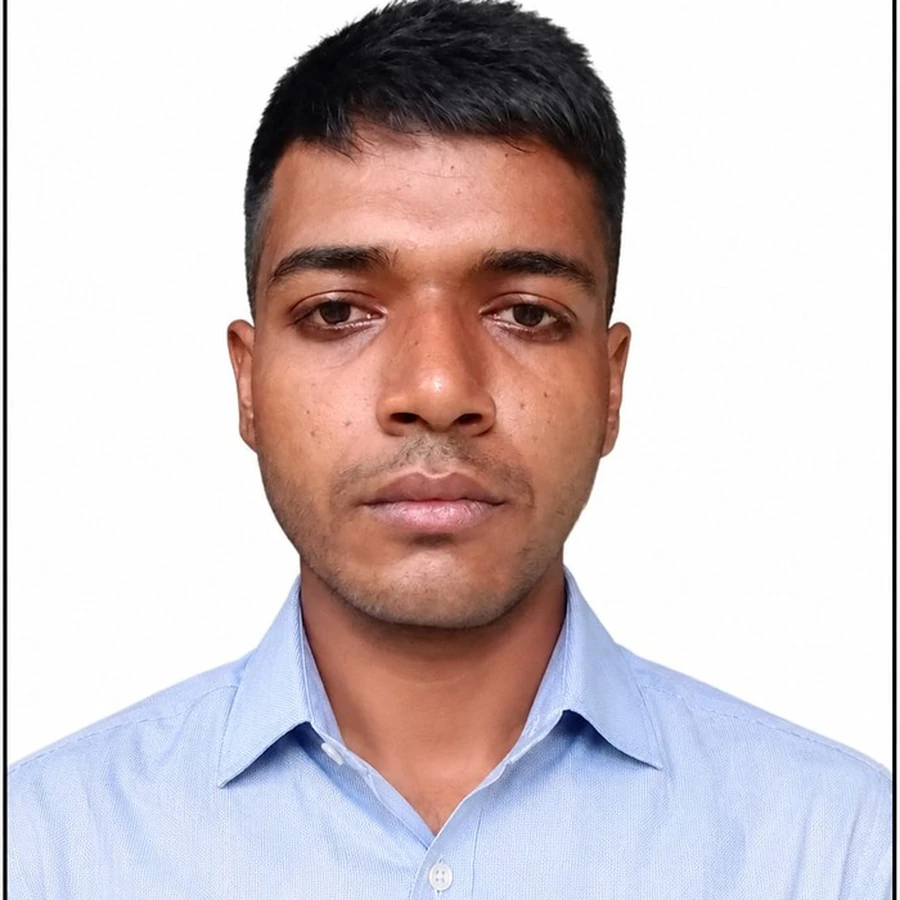
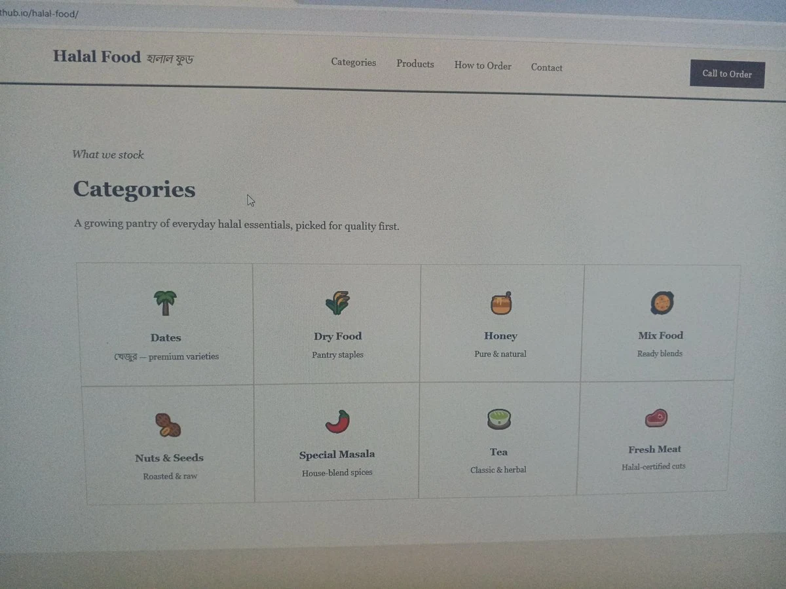

Performance Marketing · Research · Growth
Turn attentionclicksideasdata
into business momentum.
I'm Faisal Talukdar. I help businesses turn marketing questions into clearer decisions, stronger campaigns and practical growth opportunities across paid media, lead generation and market research.

Platforms I work across
AI-assisted research & workflow
What I do
Marketing built around the business goal.
Four focused entry points on the homepage. The full service menu lives on its own page so the landing experience stays fast and easy to scan.
Social Media / Meta Ads
Campaign strategy, audience research and testing for paid social.
Google Ads
Search intent, campaign structure and conversion-focused planning.
Market Research
Customers, competitors, positioning and opportunity mapping.
Lead Generation
Acquisition journeys designed to create useful business enquiries.
Selected work
Proof is being built—here is the structure.
Verified outcomes will be added as projects mature. No invented performance numbers are used here.

Halal Food — Online Product Catalogue
A practical project focused on clearer product discovery, category organization and a simpler path from browsing to enquiry.
Contact
Have a marketing question? Let's start with a quick message.
Share the business context and what you're trying to improve. Pick whichever channel is easiest — WhatsApp is fastest for a quick reply.